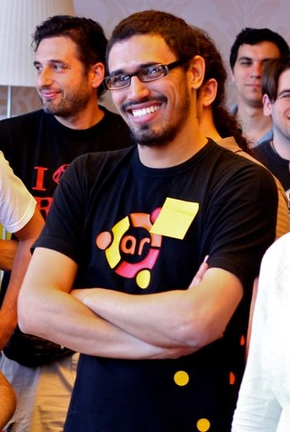

I'm passionate about software and technology and I'm working to become a software craftsman. I'm an experienced Web developer, I've worked with Ruby, Ruby on Rails, Python, Javascript among other Frameworks. I love working in teams and leading them through Agile methodologies.
Also I collaborate in different Open Source projects and I've attended as a speaker at software conferences.
I'm an active member of Hacks / Hackers Buenos Aires.
You can find more about me in all this places:
